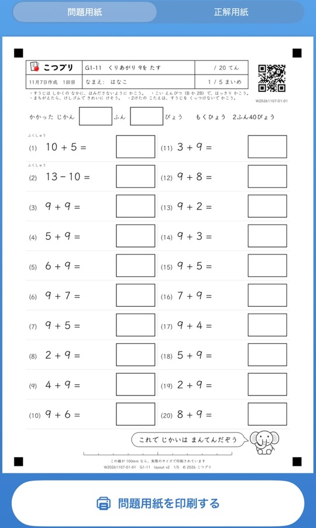
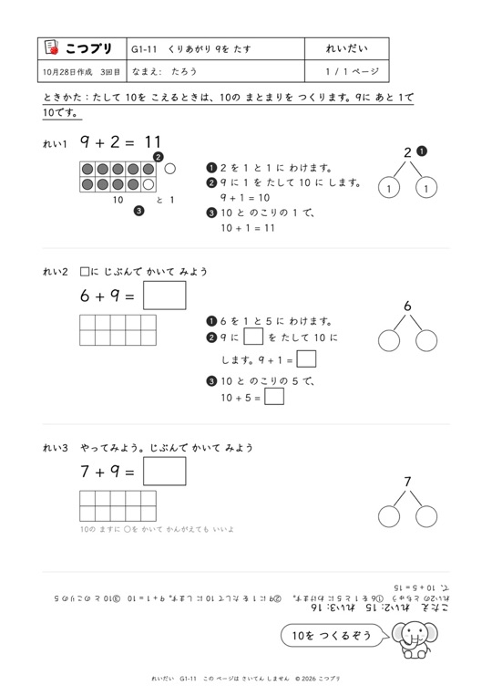
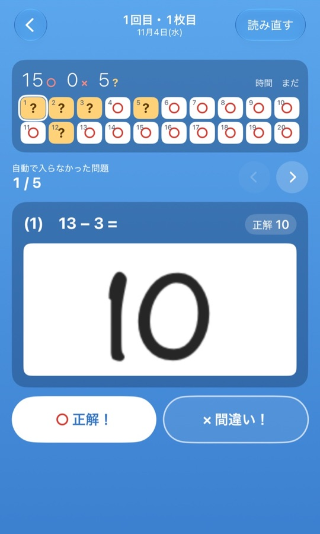
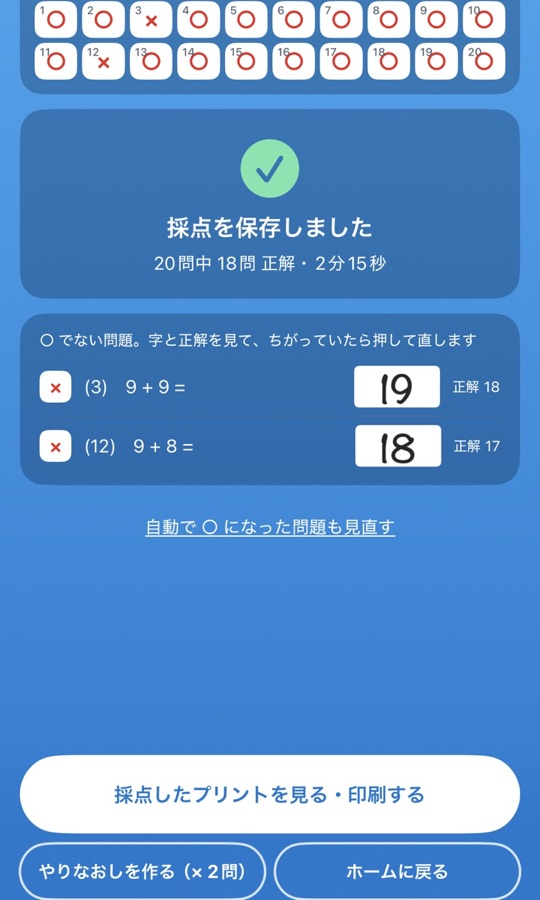

1日の流れ
子どもは紙と鉛筆だけ。保護者は印刷して、撮るだけ。
アプリを使うのは保護者です。子どもは画面に向かわず、紙の上で考えます。
-

印刷する
その子のステップのプリントを、毎回ちがう問題で。
-

ひとりで解く
例題を見て、鉛筆で。かかった時間も書きます。
-

スマホで撮って採点
読み取れた答えに ○。残りは1問ずつ見て押します。
-

返す・やりなおす
採点したプリントを子どもに。× はやりなおしプリントへ。
-
次の一歩
進む・戻るは、保護者が様子を見て決めます。
できること
昨日できたことの、すぐ次だけを。
ステップは小さく、1枚の中でも少しずつ難しく。その子の今に合わせて進みます。
小さなステップで、少しずつ上がる
小1〜小6の計算を114のステップに分けました。1枚のプリントの中でも、前の問題から後ろへ少しずつ難しくなります。
例題つきで、子どもだけで進める
新しいステップのはじめには、解き方の例題がつきます。親がそばで教えなくても、例題を見て自分で解ける自習の形です。
毎回ちがう問題を、何枚でも
プリントは作るたびに問題が変わります。同じステップを何回やっても、答えを覚えてしまうことがありません。
スマホで撮って、丸つけ
解いたプリントを撮ると、答えを読み取って ○ を付けます。読み取れなかった問題は、1問ずつ見て押すだけ。採点したプリントを印刷して、子どもに返せます。
まちがえた問題だけの、やりなおしプリント
× だった問題を集めて、1枚のプリントにします。できなかったところを、できるまでくり返します。
つまずいたら戻り、わかったら進む
さいきんの正答率と時間を見て、「次に進めそう」「少し戻ってみよう」をお知らせします。プリントは1回1枚から始めて、少しずつ枚数を増やすことも提案します。決めるのは保護者です。
きょうだいそれぞれの進み方で
子どもごとにステップと記録を分けます。上の子と下の子で進み方がちがっても、1台で使えます。
学年をこえて、先へ
学年にしばられず、わかったらどんどん先へ進めます。中学受験を考えている低学年のお子さんの、計算の土台づくりにも。
安心して使える
学習の記録と子どもの字は、家の外に出ません。
プリントを作るのも、答えを読み取るのも、この iPhone の中だけで行います。
端末の中だけに保存
学習の記録と答案の画像は、端末の中だけに保存します。開発者のサーバーには送りません。
アカウント登録なし
メールアドレスやパスワードの登録はいりません。入れたらすぐに使えます。
広告なし
広告も、利用状況の分析も入っていません。子どもに見せたくないものは出ません。
料金
市販ドリル1冊の値段で、小1から小6まで。
はじめの 5回分 は無料
- 登録もカードもいりません。すべての機能を使えます。
- 1回分は、プリントを作った1回です（1回5枚まで）。
- 購入しなくても、これまでの記録と答案は、見たり、書き出したりできます。
値段は税込みです。App Store の1回の支払いです。小1から小6までのステップを使えます。子どもが何人いても、同じ値段です。